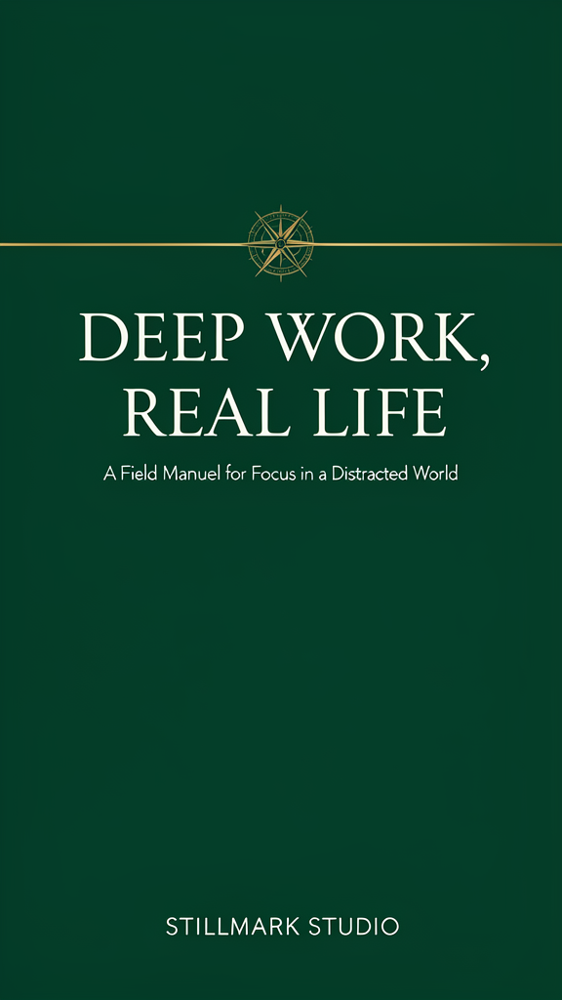
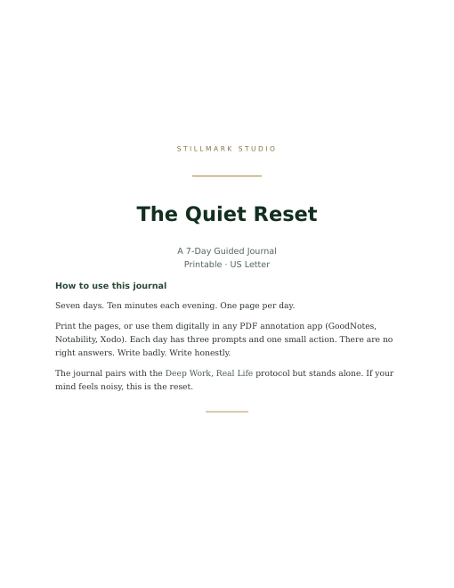
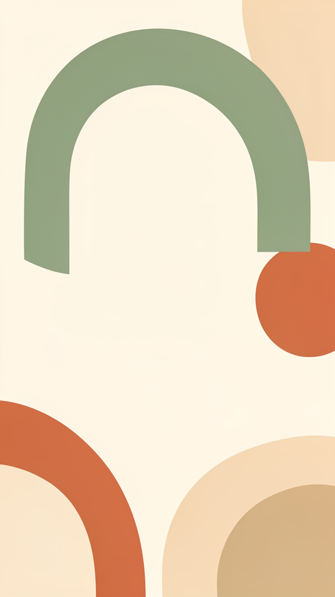

Quiet, practical tools — a deep work protocol, guided journals, and minimalist prints — for people who want their attention back. No noise, no hustle, no 4 AM alarms.
Read the free chapterEverything here is digital, instant, and yours to keep. Prices in USD.

A field manual for focus, built around one 90-minute block a day. Attention residue, ultradian rhythms, shutdown rituals — the research, translated into a 14-day protocol you can actually run inside a normal job.

A 7-day guided journal for noisy weeks. Three prompts and one small action each evening — ten minutes to empty your head and find the one thing that matters tomorrow. Pairs with the field manual or stands alone.

Three minimalist prints for the wall above your desk: a line-art boat on calm water, soft abstract arches, and one quiet reminder — one thing at a time. Print at home or at any print shop.
Stillmark Studio makes tools for a simple thesis: your attention is the asset. The best things you will ever produce are on the other side of ninety uninterrupted minutes — and almost nobody around you is getting those minutes.
Our products are built on published research — attention residue (Leroy, 2009), ultradian rhythms (Kleitman), deliberate practice (Ericsson), flow (Csikszentmihalyi) — and designed for real lives: jobs with meetings, phones you'd like to keep, finite willpower.